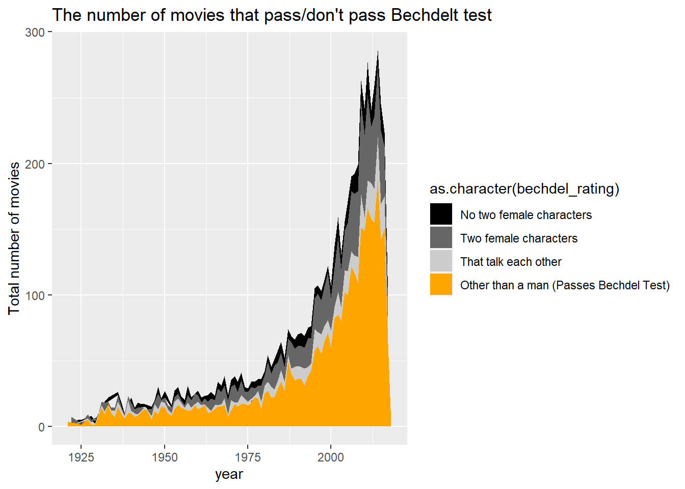

Data Analytics to understand how well women are represented in movies.
Is female representation in movies improving? - Are movies with good female representation successful in terms of popularity and profit? - Are women better represented in female-directed movies?
Attaching package: 'summarytools'
The following object is masked from 'package:tibble':
view
library(plyr)
------------------------------------------------------------------------------
You have loaded plyr after dplyr - this is likely to cause problems.
If you need functions from both plyr and dplyr, please load plyr first, then dplyr:
library(plyr); library(dplyr)
------------------------------------------------------------------------------
Attaching package: 'plyr'
The following objects are masked from 'package:dplyr':
arrange, count, desc, failwith, id, mutate, rename, summarise,
summarize
The following object is masked from 'package:purrr':
compact
library(lubridate)
Attaching package: 'lubridate'
The following objects are masked from 'package:base':
date, intersect, setdiff, union
library(ggridges)
Read in data
For this analysis, I used the following different datasets.
bechdel test : Obtained by using bechdel test API https://bechdeltest.com/api/v1/doc This data documents if movies pass bechdel test, one of the most famous tests used for female representation in forms of art.
#(1) movies_metadata.csv obtained from Kagglemovie =read_csv("_data/movies_metadata.csv")
Warning: One or more parsing issues, call `problems()` on your data frame for details,
e.g.:
dat <- vroom(...)
problems(dat)
Rows: 45466 Columns: 24
── Column specification ────────────────────────────────────────────────────────
Delimiter: ","
chr (14): belongs_to_collection, genres, homepage, imdb_id, original_langua...
dbl (7): budget, id, popularity, revenue, runtime, vote_average, vote_count
lgl (2): adult, video
date (1): release_date
ℹ Use `spec()` to retrieve the full column specification for this data.
ℹ Specify the column types or set `show_col_types = FALSE` to quiet this message.
movie
# A tibble: 45,466 × 24
adult belongs_t…¹ budget genres homep…² id imdb_id origi…³ origi…⁴ overv…⁵
<lgl> <chr> <dbl> <chr> <chr> <dbl> <chr> <chr> <chr> <chr>
1 FALSE {'id': 101… 3 e7 [{'id… http:/… 862 tt0114… en Toy St… "Led b…
2 FALSE <NA> 6.5e7 [{'id… <NA> 8844 tt0113… en Jumanji "When …
3 FALSE {'id': 119… 0 [{'id… <NA> 15602 tt0113… en Grumpi… "A fam…
4 FALSE <NA> 1.6e7 [{'id… <NA> 31357 tt0114… en Waitin… "Cheat…
5 FALSE {'id': 968… 0 [{'id… <NA> 11862 tt0113… en Father… "Just …
6 FALSE <NA> 6 e7 [{'id… <NA> 949 tt0113… en Heat "Obses…
7 FALSE <NA> 5.8e7 [{'id… <NA> 11860 tt0114… en Sabrina "An ug…
8 FALSE <NA> 0 [{'id… <NA> 45325 tt0112… en Tom an… "A mis…
9 FALSE <NA> 3.5e7 [{'id… <NA> 9091 tt0114… en Sudden… "Inter…
10 FALSE {'id': 645… 5.8e7 [{'id… http:/… 710 tt0113… en Golden… "James…
# … with 45,456 more rows, 14 more variables: popularity <dbl>,
# poster_path <chr>, production_companies <chr>, production_countries <chr>,
# release_date <date>, revenue <dbl>, runtime <dbl>, spoken_languages <chr>,
# status <chr>, tagline <chr>, title <chr>, video <lgl>, vote_average <dbl>,
# vote_count <dbl>, and abbreviated variable names ¹belongs_to_collection,
# ²homepage, ³original_language, ⁴original_title, ⁵overview
#(2) bechdel test obtained by using bechdel APIlibrary(rjson)library(jsonlite)
Attaching package: 'jsonlite'
The following objects are masked from 'package:rjson':
fromJSON, toJSON
The following object is masked from 'package:purrr':
flatten
Rows: 9802 Columns: 7
── Column specification ────────────────────────────────────────────────────────
Delimiter: ","
chr (3): imdbid, title, titleId
dbl (4): ...1, year, rating, id
ℹ Use `spec()` to retrieve the full column specification for this data.
ℹ Specify the column types or set `show_col_types = FALSE` to quiet this message.
#imdbid and titleId are technically duplicated because titleId is tt+imdbid. movie_clean1 dataframe has IDs in the same format as titleId of bechdel df so I deleted imdbid column.bechdel <- bechdel %>%select(-c(imdbid,...1))colnames(bechdel) <-c("year", "bechdel_rating", "id", "title", "titleid")col_order <-c("title", "id", "titleid","year", "bechdel_rating")bechdel <- bechdel[, col_order]# I added a column bechdel_pass where 1 means the movie passes bechdel test and 0 means otherwise.bechdel <- bechdel %>%mutate(bechdel_pass =case_when( bechdel_rating ==3~1,TRUE~0 ))
Generated by summarytools 1.0.1 (R version 4.2.1) 2022-12-01
(2) Bechdel test
bechdel dataset documents the bechdel test rating of 9630 movies released between 1874 and 2022.
It has 9630 observations (movies) and 5 columns, which are released year, title of movies, bechdel rating, and id. id that starts with “tt” followed by 7 digits seems to work as a foreign key when joining this data with movie dataset.
According to “Merriam-Webster”, Bechdel test is “a set of criteria used as a test to evaluate a work of fiction (such as a film) on the basis of its inclusion and representation of female characters” (https://www.merriam-webster.com/dictionary/Bechdel%20Test)
A movie passes bechdel test if
1) At least two women are featured
2) These women talk to each other
3) They discuss something other than a man
bechdel test rating is registered in a following manner.
0 ~ No two female characters
1 ~ Two female characters but don’t talk each other
2 ~ Two female characters talk each other about a man(men)
3 ~ Passes bechdel test: Two female characters talk each other about other than a man (men)
Generated by summarytools 1.0.1 (R version 4.2.1) 2022-12-01
Tidy data
(1) TMDb data
This dataset has several rows with NA values. Many are missing belong_to_collection, which may make sense because most movies don’t belong to any collection.
Missing the below values might affect data analysis: release_date : because I want to analyze the trend over time imdb_id: because I will use this ID to join other datasets.
For now, I don’t delete or replace NA values, however it is important to note that there are several missing values.
movie %>%select(everything()) %>%summarise_all(funs(sum(is.na(.)))) %>%t()
Warning: `funs()` was deprecated in dplyr 0.8.0.
ℹ Please use a list of either functions or lambdas:
# Simple named list: list(mean = mean, median = median)
# Auto named with `tibble::lst()`: tibble::lst(mean, median)
# Using lambdas list(~ mean(., trim = .2), ~ median(., na.rm = TRUE))
First of all, I deleted several columns, which seem to unnecessary or have too many missing values.
- adult: This information doesn’t add any significant meaning as almost all of observations have FALSE value for this column
- homepage: URL of homepage. Unnecessary for this analysis
- belong_to_collection: Has 40000+ missing values - poster_path
- video: This information doesn’t add any significant meaning as almost all of observations have FALSE value for this column
Then, I changed the order of the columns. Each row represents a movie so the movie title should be the first column.
The values in some certain columns such as “genres”, “production_companies”, “production_countries”,“spoken_languages” are in a list format for example:
Each movie contains information on one or more (up to 8) genres in a single column. To organize the information, the multiple genres contained in genre are split by “],” so that each genre is contained in eight new columns, genre1-genre8. Then, I removed unnecessary simbols such as ,.
# Separating the `genre` by "},"movie <- movie %>%separate(genres, c("genre1", "genre2", "genre3", "genre4", "genre5", "genre6", "genre7", "genre8"), "\\},", remove =FALSE)
I managed to separate the genre information above. Now all values in genre1-genre8 has a value in the format of “number name of genre” (example: 35Comedy)
However, there are 2,445 observations whose genre value doesn’t fit the above format. Most of them don’t have any genre assigned so their genre1 values are empty or blank, which means they don’t have any genre assigned to them.
movie %>%filter(!str_detect(genre1, "^[0-9]")) %>%select(starts_with("genre"))
However, looking at them closely, there are three observations whose genre value that is NOT blank but have strange strings.
The values in these observations such as “Carousel Production” and “Aniplex” don’t look like a name of genres but that of production studios. Also their original_title values don’t look like a title of movies but information of languages. It seems like these observations were not correctly read in because their values in other columns look weird.
Since these observations are not reliable, I decided to delete them from this dataset.
movie %>%filter(!str_detect(genre1, "^[0-9]") &!str_detect(genre1, "^[ \t\n]*$")) %>%#^[ \t\n]*$ is a regular expression for blank.select(c(original_title, title, production_countries, genre1:genre8))
movie_clean1 <- movie %>%filter(!str_detect(genre1, "^[A-Z]"))
Genre information is more organized but is still not easy to be analyzed. Thus, I decided to make dummy variables of each genre.
For example, if movie A is categorized as “comedy” and “adventure”, the line of movie A should have 1 in “comedy” column and “adventure” respectively and 0 in columns of other genres.
#https://community.rstudio.com/t/creating-dummy-columns-based-on-multiple-columns/58145/3movie_clean1 <- movie_clean1 %>%pivot_longer(cols =matches("genre[1-9]")) %>%add_column(count =1) %>%arrange(value) %>%filter(str_detect(value, "^[0-9]")) %>%mutate(value1 =str_replace_all(value, "[0-9]+", "")) %>%select(-c(value, name)) %>%arrange(title) %>%pivot_wider(names_from = value1, values_from = count, values_fill =list(count=0),values_fn =list(count = mean)) %>%arrange(title)# I also deleted genre "TVMovie" and "Foreign" because they're more format or origin country information rather than genre.movie_clean1 <- movie_clean1 %>%select(-c("TVMovie","Foreign"))movie_clean1[,20:37]
The values in both of production_companies and spoken_languages are in the following format. > [{‘name’: ‘XXXX’, ‘id’: —}] > [{‘iso_639_1’:‘XXXX’, ‘name’:“—-}]
I only need the information that is written as XXXX in this format.
Generated by summarytools 1.0.1 (R version 4.2.1) 2022-12-01
(3) Bechdel data
This data look quite clean, however, I looked at the summary for sense check, then I realized that the minimum number of year is 1010, which is weird. “Inazuma Eleven The Movie” was released in 2010, but it seems to have been mistakenly recorded as 1010. So I manually corrected the data.
summary(bechdel)
title id titleid year
Length:9802 Min. : 1 Length:9802 Min. :1010
Class :character 1st Qu.: 2558 Class :character 1st Qu.:1988
Mode :character Median : 5212 Mode :character Median :2006
Mean : 5225 Mean :1996
3rd Qu.: 7792 3rd Qu.:2013
Max. :10641 Max. :2022
bechdel_rating bechdel_pass
Min. :0.000 Min. :0.0000
1st Qu.:1.000 1st Qu.:0.0000
Median :3.000 Median :1.0000
Mean :2.133 Mean :0.5707
3rd Qu.:3.000 3rd Qu.:1.0000
Max. :3.000 Max. :1.0000
bechdel %>%filter(year <1800)
# A tibble: 1 × 6
title id titleid year bechdel_rating bechdel_pass
<chr> <dbl> <chr> <dbl> <dbl> <dbl>
1 inazuma eleven: the movie 10556 tt1794796 1010 3 1
bechdel$year[bechdel$year ==1010] <-2010
Exploratory Analysis - Basic movie trends -
1. The number of released movies registered in movielens (https://movielens.org/)
movie_clean1 %>%group_by(year = lubridate::year(release_date)) %>% dplyr::summarize(total_n =n()) %>%ggplot(aes(x=year, y=total_n)) +geom_line() +labs(y ="Total number of movies", title ="The total number of movies registered at TMDb",subtitle ="The number of registered movies each year is increasing from around 1920",caption ="Source https://movielens.org/")
Are there more films where female characters appear?
We can refer to if the movie passes the Bechdel test. The number of movies that pass the Bechdel test increases over time, especially after around 1980 as the total number of released movies increased.
inner_join(movie_clean1, bechdel, copy =TRUE) %>%filter(lubridate::year(release_date) >1920) %>%group_by(year = lubridate::year(release_date), bechdel_rating) %>% dplyr::summarize(n_total =n()) %>%ggplot(aes(x=year, y= n_total, fill =as.character(bechdel_rating))) +geom_area(stat ="identity") +scale_fill_manual(values =c("gray0", "gray40", "gray80", "orange"),labels=c("No two female characters", "Two female characters", "That talk each other", "Other than a man (Passes Bechdel Test)")) +labs(x="year", y ="Total number of movies", title ="The number of movies that pass/don't pass Bechdelt test")
Joining, by = "title"
`summarise()` has grouped output by 'year'. You can override using the
`.groups` argument.

The percentage of films that pass the bechdel test has been gradually increasing since around 1975, and currently nearly 70% of films pass the bechdel test. However, there was a year around 1950 when 70% of films passed the bechdel test, and it cannot be said that the percentage of films passing the bechdel test has increased compared to 70 years ago.
movie_bechdel_join %>%filter(lubridate::year(release_date) >1920) %>%group_by(year = lubridate::year(release_date), bechdel_rating) %>% dplyr::summarize(n_total =n()) %>%ggplot(aes(x=year, y= n_total, fill =as.character(bechdel_rating))) +geom_area(stat ="identity", position="fill") +scale_fill_manual(values =c("gray0", "gray40", "gray80", "orange"),labels=c("No two female characters", "Two female characters", "That talk each other", "Other than a man (Passes Bechdel Test)")) +labs(x="year", y="percentage", title ="% of movies that pass/don't pass Bechdel Test")
`summarise()` has grouped output by 'year'. You can override using the
`.groups` argument.
What category represents women better?
I focused on the movies released between 1970 and 2022 because there is a small number of movies released before 1970 (25- movies a year) and it’s better to focus on the era where more movies were released to observe the trend.
The degree to which women are portrayed in a film’s story varies widely from genre to genre.
For example, many movies in Comedy, Animation, Drama, Family, Fantasy, Romance, and Music pass the Bechdel test, while Action, Adventure, Crime, History, War, and Western The percentage of films that pass the Bechdel test is about 50% or less.
movie_bechdel_join %>%pivot_longer(cols =c(War:Music),names_to ="genre_name", values_drop_na =TRUE) %>%filter(value ==1) %>%filter(lubridate::year(release_date) >1970) %>%group_by(year = lubridate::year(release_date), bechdel_rating, genre_name) %>% dplyr::summarize(n_total =n()) %>%ggplot(aes(x=year, y= n_total, fill =as.character(bechdel_rating))) +geom_bar(stat ="identity", position ="fill") +facet_wrap(~genre_name, ncol =3)+scale_fill_manual(values =c("gray0", "gray40", "gray80", "orange"),labels=c("No two female characters", "Two female characters", "That talk each other", "Other than a man (Passes Bechdel Test)")) +labs(x ="year", y ="proportion", title ="Proportion of movies that pass / don't pass Bechdel test by categories")
`summarise()` has grouped output by 'year', 'bechdel_rating'. You can override
using the `.groups` argument.
Do movies with good female representation succeed in getting more popularity on online review site?
There seems to be no relationship between whether a film passes the bechdel test and its reputation (voting average).
---title: "Homework3 Erika Nagai"author: "Erika Nagai"description: "Introduction to Visualization"date: "11/30/2022"format: html: toc: true code-copy: true code-tools: truecategories: - hw2 - hw3 - movie - gender - bechdel test - Erika Nagaieditor: markdown: wrap: 72---## Challenge Overview**Data Analytics to understand how well women are represented inmovies.**Is female representation in movies improving? - Are movies with goodfemale representation successful in terms of popularity and profit? -Are women better represented in female-directed movies?```{r}# install librarieslibrary(tidyverse)library(ggplot2)library(stringr)library(tidyr)library(dplyr)library(summarytools)library(plyr)library(lubridate)library(ggridges)```## Read in dataFor this analysis, I used the following different datasets.(1) **movies_metadata.csv** : General information about movies released since 1880 , Obtained from Kaggle "The Movie Dataset"(<https://www.kaggle.com/datasets/rounakbanik/the-movies-dataset?resource=download&select=movies_metadata.csv>), which was created from The Movie Database (<https://www.themoviedb.org/>) and MovieLens (<https://movielens.org/>).\(2) **bechdel test** : Obtained by using bechdel test API<https://bechdeltest.com/api/v1/doc> This data documents if movies pass bechdel test, one of the most famous tests used for female representation in forms of art.(3) **credit.csv** : Information of casts and crews of movies released since 1880, Dataset"(<https://www.kaggle.com/datasets/rounakbanik/the-movies-dataset?resource=download&select=movies_metadata.csv>), which was created from The Movie Database (<https://www.themoviedb.org/>) and MovieLens (<https://movielens.org/>).```{r}#(1) movies_metadata.csv obtained from Kagglemovie =read_csv("_data/movies_metadata.csv")movie``````{r}#(2) bechdel test obtained by using bechdel APIlibrary(rjson)library(jsonlite)#json_file <- "http://bechdeltest.com/api/v1/getAllMovies"#bechdel <- read_json(path = json_file, simplifyVector = TRUE)#bechdel$titleId <- paste("tt",bechdel$imdbid, sep = "")#write.csv(bechdel, file = "_data/bechdel.csv")bechdel <-read_csv("_data/bechdel.csv")glimpse(bechdel)#imdbid and titleId are technically duplicated because titleId is tt+imdbid. movie_clean1 dataframe has IDs in the same format as titleId of bechdel df so I deleted imdbid column.bechdel <- bechdel %>%select(-c(imdbid,...1))colnames(bechdel) <-c("year", "bechdel_rating", "id", "title", "titleid")col_order <-c("title", "id", "titleid","year", "bechdel_rating")bechdel <- bechdel[, col_order]# I added a column bechdel_pass where 1 means the movie passes bechdel test and 0 means otherwise.bechdel <- bechdel %>%mutate(bechdel_pass =case_when( bechdel_rating ==3~1,TRUE~0 ))```## Describe data### (1) TMDbThis movie dataset was generated by Movielens, a (non-profit) moviereview website (<https://movielens.org/>), and was obtained from thefollowing Kaggle link.(<https://www.kaggle.com/datasets/rounakbanik/the-movies-dataset?resource=download&select=movies_metadata.csv>)The movie dataset is contains 45466 movies with a released date betweenDecember 9th 1874 and December 16th 2020.The data includes the information of genres, revenue, runtime,languages, status (released/in production etc...).```{r}print(summarytools::dfSummary(movie),varnumbers =FALSE,plain.ascii =FALSE,style ="grid",graph.magnif =0.80,valid.col =FALSE,method ='render',table.classes ='table-condensed')```### (2) Bechdel test`bechdel` dataset documents the bechdel test rating of 9630 moviesreleased between 1874 and 2022.It has 9630 observations (movies) and 5 columns, which are releasedyear, title of movies, bechdel rating, and id. id that starts with "tt"followed by 7 digits seems to work as a foreign key when joining thisdata with `movie` dataset.According to "Merriam-Webster", Bechdel test is "a set of criteria usedas a test to evaluate a work of fiction (such as a film) on the basis ofits inclusion and representation of female characters"(<https://www.merriam-webster.com/dictionary/Bechdel%20Test>)A movie passes bechdel test if1\) At least two women are featured2\) These women talk to each other3\) They discuss something other than a man**bechdel test rating is registered in a following manner.**0 \~ No two female characters1 \~ Two female characters but don't talk each other2 \~ Two female characters talk each other about a man(men)3 \~ Passes bechdel test: Two female characters talk each other aboutother than a man (men)```{r}print(summarytools::dfSummary(bechdel),varnumbers =FALSE,plain.ascii =FALSE,style ="grid",graph.magnif =0.80,valid.col =FALSE,method ='render',table.classes ='table-condensed')```## Tidy data### (1) TMDb dataThis dataset has several rows with NA values. Many are missing`belong_to_collection`, which may make sense because most movies don'tbelong to any collection.Missing the below values might affect data analysis:\`release_date` : because I want to analyze the trend over time\`imdb_id`: because I will use this ID to join other datasets.For now, I don't delete or replace NA values, however it is important tonote that there are several missing values.```{r}movie %>%select(everything()) %>%summarise_all(funs(sum(is.na(.)))) %>%t()```First of all, I deleted several columns, which seem to unnecessary orhave too many missing values.\- `adult`: This information doesn't add any significant meaning asalmost all of observations have FALSE value for this column\- `homepage`: URL of homepage. Unnecessary for this analysis\- `belong_to_collection`: Has 40000+ missing values - poster_path\- `video`: This information doesn't add any significant meaning asalmost all of observations have FALSE value for this column\Then, I changed the order of the columns. Each row represents a movie sothe movie title should be the first column.```{r}movie <- movie %>%select(-c("adult", "homepage", "belongs_to_collection", "poster_path", "video"))col_order <-c("title", "original_title", "tagline", "imdb_id", "id", "overview", "production_companies", "production_countries", "status", "release_date", "runtime", "revenue", "budget", "original_language", "spoken_languages", "popularity", "vote_average", "vote_count", "genres")movie <- movie[, col_order]colnames(movie)[5] <-"movielens_id"colnames(movie)```The values in some certain columns such as "genres","production_companies", "production_countries","spoken_languages" are ina list format for example:> " \[{'id': XXXX, 'content(name/genre/title)': XXX}, {'id': XXXX,> 'content(name/genre/title): XXX}\] "These columns include `[]``{}` and `'` in their values so I made afunction `remove_simbols` that removes these unnecessary symbols.```{r}movie %>%select(c("genres", "production_companies", "production_countries", "spoken_languages"))remove_symbols <-function(x) { removed_x <-str_remove_all(x, "\\{|\\}|\\[|\\}|\\]|'|,|id|name|:| ")return(removed_x)}```#### (1). Tidying `Genres`Each movie contains information on one or more (up to 8) genres in asingle column. To organize the information, the multiple genrescontained in `genre` are split by "\]," so that each genre is containedin eight new columns, genre1-genre8. Then, I removed unnecessary simbolssuch as ,.```{r}# Separating the `genre` by "},"movie <- movie %>%separate(genres, c("genre1", "genre2", "genre3", "genre4", "genre5", "genre6", "genre7", "genre8"), "\\},", remove =FALSE)# Remove unnecessary symbols from each columnsmovie$genre1 <-remove_symbols(movie$genre1)movie$genre2 <-remove_symbols(movie$genre2)movie$genre3 <-remove_symbols(movie$genre3)movie$genre4 <-remove_symbols(movie$genre4)movie$genre5 <-remove_symbols(movie$genre5)movie$genre6 <-remove_symbols(movie$genre6)movie$genre7 <-remove_symbols(movie$genre7)movie$genre8 <-remove_symbols(movie$genre8)movie %>%select(matches("[1-9]"))```I managed to separate the genre information above. Now all values ingenre1-genre8 has a value in the format of "number name of genre"(example: 35Comedy)However, there are 2,445 observations whose genre value doesn't fit theabove format. Most of them don't have any genre assigned so their`genre1` values are empty or blank, which means they don't have anygenre assigned to them.```{r}movie %>%filter(!str_detect(genre1, "^[0-9]")) %>%select(starts_with("genre"))```However, looking at them closely, there are three observations whose`genre` value that is NOT blank but have strange strings.The values in these observations such as "Carousel Production" and"Aniplex" don't look like a name of genres but that of productionstudios. Also their `original_title` values don't look like a title ofmovies but information of languages. It seems like these observationswere not correctly read in because their values in other columns lookweird.Since these observations are not reliable, I decided to delete them fromthis dataset.```{r}movie %>%filter(!str_detect(genre1, "^[0-9]") &!str_detect(genre1, "^[ \t\n]*$")) %>%#^[ \t\n]*$ is a regular expression for blank.select(c(original_title, title, production_countries, genre1:genre8))movie_clean1 <- movie %>%filter(!str_detect(genre1, "^[A-Z]"))```Genre information is more organized but is still not easy to beanalyzed. Thus, I decided to make dummy variables of each genre.For example, if movie A is categorized as "comedy" and "adventure", theline of movie A should have 1 in "comedy" column and "adventure"respectively and 0 in columns of other genres.```{r}#https://community.rstudio.com/t/creating-dummy-columns-based-on-multiple-columns/58145/3movie_clean1 <- movie_clean1 %>%pivot_longer(cols =matches("genre[1-9]")) %>%add_column(count =1) %>%arrange(value) %>%filter(str_detect(value, "^[0-9]")) %>%mutate(value1 =str_replace_all(value, "[0-9]+", "")) %>%select(-c(value, name)) %>%arrange(title) %>%pivot_wider(names_from = value1, values_from = count, values_fill =list(count=0),values_fn =list(count = mean)) %>%arrange(title)# I also deleted genre "TVMovie" and "Foreign" because they're more format or origin country information rather than genre.movie_clean1 <- movie_clean1 %>%select(-c("TVMovie","Foreign"))movie_clean1[,20:37]```#### (2). Tyding `Production_countries`The values in `production_countries` are written in the following way.\>\[{'iso_3166_1': 'abbreviation of country','name': 'full countryname'}\]When there are more than one country in the value, I took the firstcountry in account for this analysis.```{r}movie_clean1$production_countries <-remove_symbols(movie_clean1$production_countries)movie_clean1$production_countries <-str_extract(movie_clean1$production_countries,"(?<=_1)\\w{2}")movie_clean1 %>%select(production_countries)```#### (3). Tyding `production_companies` & `spoken_languages`The values in both of `production_companies` and `spoken_languages` arein the following format. \>\[{'name': 'XXXX', 'id': ---}\]\>\[{'iso_639_1':'XXXX', 'name':"----}\]I only need the information that is written as XXXX in this format.```{r}movie_clean1$production_companies <-str_remove_all(movie_clean1$production_companies, "'id': [0-9]*|'name':|\\[|\\]|'|\\{|,") %>%str_replace_all("\\},", ",") %>%str_replace_all(" \\} ", ",")%>%str_remove(" \\}")movie_clean1$spoken_languages <-str_remove_all(movie_clean1$spoken_languages, "'iso_639_1':|'name': '\\w+'|\\[|\\]|'|\\{|,") %>%str_replace_all(" \\} ", ",") %>%str_remove_all(" \\}")movie_clean1 %>%select(production_companies, spoken_languages)```Now, the dataset is cleaner. Look at the summary again.```{r}print(summarytools::dfSummary(movie_clean1),varnumbers =FALSE,plain.ascii =FALSE,style ="grid",graph.magnif =0.80,valid.col =FALSE,method ='render',table.classes ='table-condensed')```### (3) Bechdel dataThis data look quite clean, however, I looked at the summary for sense check, then I realized that the minimum number of year is 1010, which is weird."Inazuma Eleven The Movie" was released in 2010, but it seems to have been mistakenly recorded as 1010.So I manually corrected the data.```{r}summary(bechdel)bechdel %>%filter(year <1800)bechdel$year[bechdel$year ==1010] <-2010```## Exploratory Analysis - Basic movie trends -**1. The number of released movies registered in movielens**(https://movielens.org/)```{r}movie_clean1 %>%group_by(year = lubridate::year(release_date)) %>% dplyr::summarize(total_n =n()) %>%ggplot(aes(x=year, y=total_n)) +geom_line() +labs(y ="Total number of movies", title ="The total number of movies registered at TMDb",subtitle ="The number of registered movies each year is increasing from around 1920",caption ="Source https://movielens.org/")```## Female representation in movies -**Are there more films where female characters appear?**We can refer to if the movie passes the Bechdel test. The number ofmovies that pass the Bechdel test increases over time, especially afteraround 1980 as the total number of released movies increased.```{r}inner_join(movie_clean1, bechdel, copy =TRUE) %>%filter(lubridate::year(release_date) >1920) %>%group_by(year = lubridate::year(release_date), bechdel_rating) %>% dplyr::summarize(n_total =n()) %>%ggplot(aes(x=year, y= n_total, fill =as.character(bechdel_rating))) +geom_area(stat ="identity") +scale_fill_manual(values =c("gray0", "gray40", "gray80", "orange"),labels=c("No two female characters", "Two female characters", "That talk each other", "Other than a man (Passes Bechdel Test)")) +labs(x="year", y ="Total number of movies", title ="The number of movies that pass/don't pass Bechdelt test")```The percentage of films that pass the bechdel test has been graduallyincreasing since around 1975, and currently nearly 70% of films pass thebechdel test. However, there was a year around 1950 when 70% of filmspassed the bechdel test, and it cannot be said that the percentage offilms passing the bechdel test has increased compared to 70 years ago.```{r}movie_bechdel_join <-inner_join(movie_clean1, bechdel, copy =TRUE) movie_bechdel_join %>%filter(lubridate::year(release_date) >1920) %>%group_by(year = lubridate::year(release_date), bechdel_rating) %>% dplyr::summarize(n_total =n()) %>%ggplot(aes(x=year, y= n_total, fill =as.character(bechdel_rating))) +geom_area(stat ="identity", position="fill") +scale_fill_manual(values =c("gray0", "gray40", "gray80", "orange"),labels=c("No two female characters", "Two female characters", "That talk each other", "Other than a man (Passes Bechdel Test)")) +labs(x="year", y="percentage", title ="% of movies that pass/don't pass Bechdel Test")```**What category represents women better?**I focused on the movies released between 1970 and 2022 because there isa small number of movies released before 1970 (25- movies a year) andit's better to focus on the era where more movies were released toobserve the trend.The degree to which women are portrayed in a film's story varies widelyfrom genre to genre.For example, many movies in Comedy, Animation, Drama, Family, Fantasy,Romance, and Music pass the Bechdel test, while Action, Adventure,Crime, History, War, and Western The percentage of films that pass theBechdel test is about 50% or less.```{r}movie_bechdel_join %>%colnames()movie_bechdel_join %>%pivot_longer(cols =c(War:Music),names_to ="genre_name", values_drop_na =TRUE) %>%filter(value ==1) %>%filter(lubridate::year(release_date) >1970) %>%group_by(year = lubridate::year(release_date), bechdel_rating, genre_name) %>% dplyr::summarize(n_total =n()) %>%ggplot(aes(x=year, y= n_total, fill =as.character(bechdel_rating))) +geom_bar(stat ="identity", position ="fill") +facet_wrap(~genre_name, ncol =3)+scale_fill_manual(values =c("gray0", "gray40", "gray80", "orange"),labels=c("No two female characters", "Two female characters", "That talk each other", "Other than a man (Passes Bechdel Test)")) +labs(x ="year", y ="proportion", title ="Proportion of movies that pass / don't pass Bechdel test by categories")```**Do movies with good female representation succeed in getting morepopularity on online review site?**There seems to be no relationship between whether a film passes thebechdel test and its reputation (voting average).```{r}movie_bechdel_join %>%filter(lubridate::year(release_date) >1970) %>%ggplot(aes(x=as.character(bechdel_rating), y=vote_average)) +geom_boxplot()```